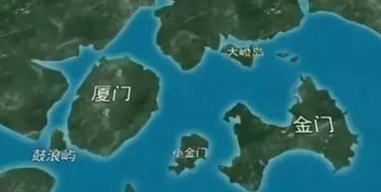
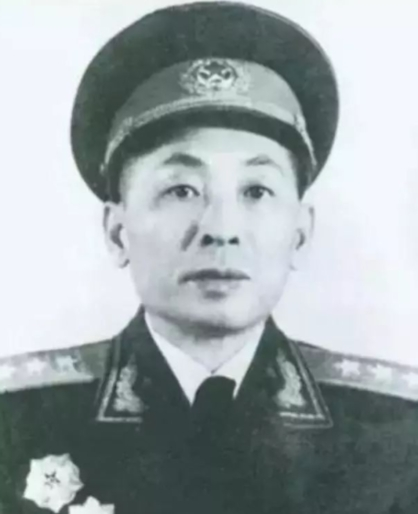
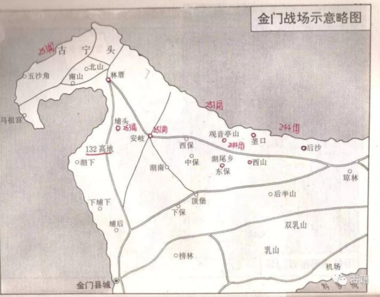
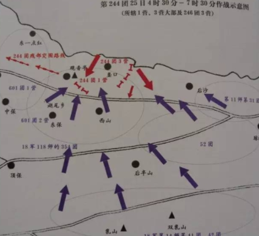
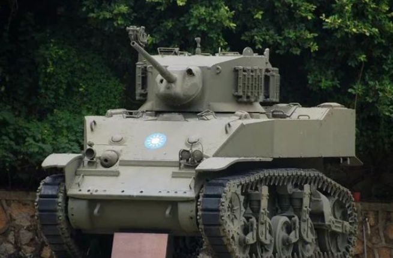

金门战役检讨
刘亚洲
一、意义
１９４９年１０月２４日，新中国成立的第二十四天，人民解放军二十八军下属三个团共九千余人渡海进攻金门，发起金门战役，在岛上苦战三昼夜，因后援不继，全军覆灭，是解放军成军以来唯一一次彻底的败仗。我军历史上虽有湘江之战、西路军血战河西走廊、皖南事变等惨重损失，但均非全军覆灭。１９４９年以前，我军驰骋陆地。敌强时，我避而歼之；敌弱时，我聚而歼之。１９４９年我军始下海进攻岛屿，乃全新课题。海岛作战，胜则全胜，败则全没。这一作战特点直至今日仍颠扑不破。
金门战役具有重大历史意义和现实意义。金门战役虽战于一隅，却影响全局。这种影响直到今天仍然存在。
①无金门之战，便无今日台湾。中国命运至１９４９年走到重要关口。解放军横扫中国如卷席。美国人已抛弃了蒋介石。当时，国民党军一部在西南，一部在海南岛，一部在中越中缅边境，台湾实际是个空岛。胡琏认为：台湾岛上总兵力不会超过十万。且“官比兵多，枪比人多”。我揣测毛泽东的“妙算”：克闽境后，扫荡金、厦诸岛，尔后效郑成功、施琅故事，在福建造船，千帆竞渡，直取台湾。下台湾后，再回头收拾西北、西南山河。倘若如此，历史将改写。但毛泽东是一位大陆战略家。他可在陆地上将蒋介石八百万精锐鲸吞，但金门战役却败了。与其说败给蒋军，不如说败给海洋。自那以后，悠悠五十载，解放军兵锋再未染指台湾海峡。１９４９年１０月２７日金门战役获胜的消息传到台北，蒋介石流了泪。他太需要一次胜利了。他太知道金门战役的意义了。他说：“这一仗我们全胜了……台湾安全了。”金门的战略地位太重要了。它位于大陆边缘，北与马祖毗连，构成两栖性的边缘地带。金门是台湾的桥头堡。蒋介石说：“无金门便无台、澎；有台湾便有大陆。”历史上郑成功、施琅攻取台湾，都以金、厦为出发地。金门在敌手中，进可封锁内陆，退可屏障台湾。金门若在我手中，台湾海峡的交通线便面临极大威胁。台湾顿失前敌。大军渡海，朝发夕至。就是到今天，欲解决台湾问题，仍首先要解决金门问题。
②金门战役奠定了国民党经营台湾的心理基础。蒋介石是旧军阀的克星。毛泽东是蒋介石的克星。说什么“胜不离川，败不离湾”，我的评介是四个字：“逢毛必输。”内战二十年，生生锻出一支铁军。共产党无一地而夺天下。国民党坐天下而失天下。共军打国军，左右都是赢。国军打共军，横竖都是输。国民党对共产党的心理优势崩溃于零。至１９４９年，更是士气土崩，精神瓦解。一败如水。在这种情况下，金门战役象一针强心剂，注入国民党濒死的肌体。这个党又活过来了。五十年来，国民党认真汲取丢失大陆的教训，励精图治。台湾发生了翻天覆地的变化。今天的台湾，经济独秀于世界之林。军事赖美国撑腰，也不乏看家的本钱。政治满盘西化。已成为我心腹大患。蒋经国认为：“金门战役是国民党的转折点。”胡琏说：“金门战役的胜利既是军事上的，也是政治上的，更是精神上的。”台湾有人把金门战役比作中国历史上的赤壁之战，道理正在于此。两相比较，确有相似之处：赤壁有宽阔的江面，金门有宽阔的海面；赤壁之战是以弱胜强，金门之战总体上也是以弱击强；赤壁之战后中国三分，金门之战后祖国统一被阻挠。民进党上台后，继续接过“古宁头精神”的接力棒。吕秀琏称：“古宁头大战，两岸变两国。”民进党的一个杂志说：“金门之役，过去诸种意义都还在，今天则增添了新的意义：它是由中国中华民国过渡到台湾中华民国的一次重要战役。它的价值永远没有褪色。”我曾访问金门，听的最多的一句话是：“金门扮演的是小兵立大功的角色。”
③研究金门之战的意义。江主席说：“台海必有一战。”金门战役，我军是以陆地为基地，渡过一个海峡，到一个岛屿登陆作战。当时我军将领只看到这是由岸至岸的水上运动，认为是由此岸到彼岸的运动作战，如同对大河大江的渡河攻击一样。而实际上，金门之战是一次两栖登陆与反登陆作战，与我将来解放台湾的战争模式是一样的。台湾是放大的金门。二十八军是缩小的我军。金门之战是一面镜子，可以正衣冠，可以论得失。金门战役中暴露出来的诸多问题，今天仍不同程度存在。时光虽不能倒流，历史却可以重演。唯有认真吸取金门之战血的教训，才能在未来的台海决战中稳操左券。从另一个意义上讲，我军应加强对败仗的研究。胜利有一百个父亲，失败是一个孤儿。我们对金门之战关注太少。这一点，我们需要有美军的精神。美军直到今天还在研究越战，而对海湾战争和科索沃战争却不大用心。越战是美军战史中最惨痛的一页，虽已翻过去二十多年，可美军仍不停阅读，在这方面花费了大量人力和财力。失败是警钟。胜利又何尝不是警钟。美军对失败死死咬住不放，对胜利则格外当心。其实这正反映它求胜心切。我们正相反：胜利浓泼重彩，失败轻轻带过。研究战史也是治史，需要董狐笔。要避免“年代久，失之真；年代近，失之偏”的倾向。
现在开始检讨金门战役。
二、轻敌
当时敌我态势是：解放军华东野战军第十兵团入闽，以排山倒海之势南推。十兵团司令员叶飞，福建南安人，出生于菲律宾，衣锦还乡，闽人治闽，无限风光。叶飞号称“小叶挺”，善战，多谋，常胜。解放战争以来，十兵团平山东，扫淮海，跨长江，克福州，战无不胜。１９４９年１０月１７日解放厦门，金门顿成一座孤岛。岛上守军为李良荣的二十二兵团，约两万人。十兵团十万大军隔海虎视。优劣立见。这时候，最可怕的敌人出现了。这个敌人就是轻敌情绪。一股有毒的气氛弥漫在十兵团上空。
①主帅轻敌。此乃兵家大忌。古今中外，将帅轻敌而丧师者，不可数。未战而轻敌，胜负已定。这也算成败系于一人。叶飞知兵，本不至此，但他被节节胜利冲昏了头脑。首先，他的心不在金门，而在台湾。他根本不把金门李良荣的两万残兵放在眼角。他已把目光投向了海峡另一端。恐怕不仅他，整个三野，整个解放军，都如此。当时风靡的看法是，不怕敌人守，就怕敌人走。十兵团的作战原则是：尽量把敌人有生力量歼灭在大陆和沿海岛屿，不使其逃到台湾，为日后解放台湾增加难度。
十兵团曾有三个进攻方案：一、先金后厦；二、先厦后金；三、金、厦并举。都是为着一个作战原则而制定：不放跑敌人。二十八军的作战口号干脆就是：坚决打金门，渡海攻台湾。金门不要说无法与台湾比，就是与厦门比也差得远：守金门的李良荣兵团不是蒋介石的嫡系，战斗力弱。守厦门的汤恩伯集团是精锐之师，蒋军嫡系；金门没有永久性工事，厦门有永久性设防工事要塞；金门是个小县，厦门是座大城。厦门被克，金门指日可下。在１９４９年１０月在泉州召开的兵团作战会议上，叶飞意气奋发地说了四个字：“此役必胜！”一位老前辈曾对我说：叶飞在老虎洞宴请厦门地方领导，用筷子指菜盘，道：“金门就是这盘中的一块肉，想什么时候夹就什么时候夹，跑不了。”大笑，傲气溢于言表。十兵团入闽前，毛泽东曾发给华东野战军一个电报：“你们应当迅速准备提早入闽，争取于六、七两个月内占领福州、泉州、漳州及其它要点，并准备相机夺取厦门。”毛泽东没有提到金门。金、厦自古就是一个生活圈。“金为泉郡之下臂，厦为漳郡之咽喉”。可见毛泽东眼中也有厦无金。恰恰是金门，改变了历史，改变了大陆的形态。厦门解放后，叶飞任军管会主席。他曾在此做地下工作，被捕，九死一生。尔今大军入城，万人空巷。十七年前他是厦门的穷学生，十七年后他是此城的征服者。有一个细节许多历史学家都忽略了：叶飞一进厦门，就把母亲从家乡接来。这反映出他认为已无大战。大敌当前，主帅先自松懈。他对厦门的市政工作投入的精力远远超过对军事工作的关注。戎衣未解，心已歇了。就要对金门发起攻击，他却命令兵团后勤部在１０月底前筹措大米四百万斤，柴草六百万斤，供应厦门市。同时，责成泉州、漳州两地全力支援厦门。他任命了一系列地方干部，包括任命了一位金门县长。这位县长的任命直到今天仍有效。叶飞甚至还有时间去大学做报告。行前，秘书特意提醒他：不要忘了带钢笔，不少学生要求签名。他把攻打金门的任务交给二十八军。我一直认为，叶飞选择二十八军打金门是犯了不可挽回的错误。理由一，在十兵团中，二十八军善守不善攻，甚少攻坚任务，多是打阻击战；理由二，二十八军军长朱绍清在上海治病，政委陈美藻治理福州，参谋长也不在位，军中只有副军长肖锋一人，既当爹又当娘。做此决定仍然是出于叶飞的轻敌。叶飞对肖锋说：“看来大陆再也不会有什么大仗打了，你们二十八军就扫个尾吧。”有人对此提出异议，叶飞说：“进攻金门本来就是二十八军的任务，没什么改变了。我是充满信心的！”１０月２０日左右，二十八军向兵团呈报了攻打金门的作战计划，叶飞因处理地方事务太忙，竟没有看一遍，惶论研究、修改，便批准。大战将起，因敌情不明，特别是离开了广东潮、汕地区后在海上游弋的胡琏十二兵团动向不明，肖锋有些犹豫。叶飞在电话中说：“只要上去两个营，你再掌握好二梯队，战斗胜利是有希望的。”叶飞还交待：“有几个人打几个人的仗，不等待，不犹豫，向里猛插。”轻敌至此，焉得不败？部队就是被这种轻敌送进虎口的。
后来得知，不仅十兵团，就是华东野战军也被轻敌情绪笼罩。五十年代初期我党批判“高、饶反党集团”时，陈毅曾讲过这样一段话：“进攻金门，全军覆没，本是军事机密，我忍不住要讲出来。就在解放上海那年秋天，为了给解放台湾打下基础，党中央决定首先解决金门，这是台湾的门户。三野接受这伟大的任务。可是当时我与饶漱石对如何解放金门，发生了歧见。饶漱石产生了轻敌思想，认为我军一登陆，金门就会不战而降。派一、两个师进攻，金门问题就能解决……”
②全军轻敌。主帅的态度便是全军将士的睛雨表。叶飞如此，进攻金门的总指挥员肖锋又好到哪里去了？十兵团老同志都讲：肖锋甚至比叶飞还轻敌。叶飞主要是在战略上轻视敌人，肖锋则在战略上和战术上统统轻敌。首先让我们看看这次进攻部队的编排：第一梯队的三个团隶属三个不同建制的师（主攻团二四四团属八十二师、助攻团二五一团属八十四师、二五三团属八十五师）。很长一段时间我始终不明白肖锋怎么排了个这么古怪的阵容，不象是啃骨头，倒象是喝稀粥。后来二十八军一位老领导向我道出原委：肖锋也认为此战必胜，胜利后必有缴获。他的指导思想是“照顾本位，最后抓一把”，希望各部队都能在最后的胜利中分摊点实惠。事实也证明肖锋是准备庆功的。他在指挥所里摆了酒。第一梯队登陆成功后，他曾连饮三大杯，豪情万丈地用报话机遥祝：“同志们奋勇前进！”其次，准备工作不周密，训练不严。当时解放军全是旱鸭子，二十八军也不例外。多数战士头一遭见大海。一团长竟说：“谁在海里放了这么多盐，那么咸！”在这之前，十兵团是解放军全军唯一进行过岛屿作战的部队：北打平潭，南打厦门。平潭上去四个连，蒋军即垮。厦门上去七个连，敌人也守不住。两岛小胜，致使将士们认为海岛作战不过尔尔，并不看重那个状似哑铃的小岛。后来遭到败绩，先怨潮汐，再怨船少，均是准备不周所致。何况船并不少。当时一位县委书记说：“福建这么大，我看筹一千条船也能筹到。”一个船工在战后说：“什么没船？我住的那湾子里就有一百多条哩。”不下苦功，功败垂成。最后，让我们看一看进攻部队的作战方案。我在金门“古宁头大战纪念馆”里看到敌人缴获的二十八军制定的“战法”：“火力压制，多点登陆，一处撕破，四面开花，隔绝阻塞，各个击破。”霸气横溢，有我无敌。惟觉实少虚多，对困难未在意，对失败不顾及，仿佛不是作战，是演习。在许多不同部队的作战命令中不约而同地出现了相同的字句：“登陆就是胜利。”我主攻团的作战计划还有这样一则命令：“每人携带熟给养三餐，准备苦战一天。”助攻团则准备“在金门县城吃中午饭”。五十年后，傲气仍可触摸。纵是头脑最清醒的主攻团团长兼政委邢永生，曾在下海前对师长钟贤文开玩笑说：“这一次我回不来了。你再也看不见我，我也看不见你了。”其实他的清醒也不过比别人前进了十几米。他是决心用三天时间解决战斗的。他在给妻子的信中说：“三天，只用三天，我一定回来！”船只那样缺乏，第一波只够载运九千兵，可有些船上仍然装了不该装的东西，令我今天想起来还觉得可耻。主攻团的几条船上都载着大量新印制的人民币，据说是准备用来庆功时大把花销的，被国民党军缴获时许多钞票连褶印都没有，整整装满好几箩筐。另一个团的船上装了猪，也是庆功用品。更可笑的是，居然在有的船上还载着办公桌椅，以便“新政权使用”。
我军轻敌，包括轻视了蒋介石固守金门的决心。起初，蒋介石讲：“如果说台湾是头颅，福建就是手足。”后来他把这个荣誉给了金门。厦门失守后，他曾严令汤恩伯：“金门不能再失，必须就地督战，负责尽职，不能请辞易将。”金门岛原来确无永久性工事，但由于受到蒋介石垂注，十月初，开始大规模建设。材料不够，国民党军拆了寺庙、祠堂，包括民房，甚至用坟墓墓碑做碉堡。十几天之内，在古宁头到一点红之间宽达十公里的海岸线上，二百多个碉堡耸立起来。后来这一线正是是解放军的突破点，碉堡给登陆部队带来了灾难。其实，稍有战争常识的人都明白蒋介石弃厦守金的理由：其一，厦门是重要港口城市，人口二十万。大陆解放后，厦门即成死城。其二，厦门离大陆近，金门离大陆远。厦门被大陆三面包围，金门则靠外海，利于台湾支援。叶飞、肖锋饱战之士，就算忽略了上述两条理由，而下面两个迹象也被忽略，就属不该了：我军进攻厦门时，汤恩伯是在船上指挥的。而我军攻金门，汤恩伯则上了岛；我军攻厦，非但台湾不增援，金门近在咫尺，也未派一兵一卒增援。叶飞和肖锋都被迷雾蒙住了双眼。
今天，台军已非当年蒋军，台湾亦非金门。更何况天险横亘。台海作战将比金门作战艰难万倍。不是台湾固守台湾，而是整个西方固守台湾。自我方备战以来，一股在金门之战见过的、似曾相识的气味渐渐袭来。前年，有关部门论证台湾可不可打，雄心万丈，壮语盈耳。有的讲：“打！朝发夕至！”有的讲：“台湾军队不堪一击，我军稳操胜券。”有一张报纸更以唬人的大标题这样写道：“我军的导弹可准确无误地打到李登辉的办公桌上。”去年，这个部门论证如何打，我去参加，更见一团鼓噪。心浮得都飘到半空中去了。我出一题目：“现在举头是卫星，低头是雷达，如何在众目睽睽之下朝福建运兵？”一人回答：“那还不容易！你看见这几个七天的长假期了吗？全国那么多老百姓在列车上移动。我们可选一个长假期，将军队士兵换上老百姓的服装，坐火车入闽。神不知，鬼不晓！”我报以苦笑。主办单位让我最后发言，我只讲了一句：“最大的敌人是自己。”
三、渡海工具
传统的渡海作战，有两条原则必须遵循：一，第一攻击波要具有突破防线并向纵深发展的充裕力量, 对渡海工具要求甚高；二，建立稳固的滩头阵地。今天对台作战，不上岛则另当别论，若上岛，依旧要循这两条原则。金门之败，恰败在这两条上，尤其是渡海工具。
①先机制敌。蒋介石因为早下决心经营台湾，对船只问题有着深刻的认识。１９４９年９月，他命令汤恩伯：敌军若来犯，必在每月满潮之时，务必要派海空军在此之前不断搜索敌船，凡可通海口各内河之上游一百海哩内的大小船只，必须彻底炸毁。台湾飞机不光炸福建，连浙江、江苏沿海都炸了，甚至炸了上海造船厂。二十八军是采取把船沉在水底下的办法才保留了三百多条船的。国民党后来吹嘘：蒋介石的手谕对金门之战起了决定性作用，不是一点道理没有。我军高级将领中对此清醒者唯粟裕一人。一前辈对我讲：十兵团攻金门前，粟将军焦燥不安，在办公室里倒骑椅子，凝视军用地图，整整一日不动，后取口琴吹奏《苏武牧羊》，曲颇凄凉。肖锋说粟裕对攻击金门有“三不打”指示：没有一次运载六个团的船只不打；敌增援不打；要求山东沿海挑选六千名久经考验的船工支援十兵团，船工不到不打。其中第一条和第三条都与渡海有关。今天，针对我对台攻势，陈水扁叫嚣：与大陆决战于境外，决战于岛外。据了解，所谓“外岛战略”中很重要的一环，就是在战争逼近之前集中优势海空力量摧毁我渡海工具。美国兰德公司曾向美军方提出一旦台海爆发战争时美军应采取的三个方案，其中B 方案就是所谓“海峡战略”，即以中国的渡海能力和渡海部队为主要打击目标。选择在中国部队在渡海过程中给予毁灭性打击。
②第一攻击波必须独立作战。第二梯队不能依赖第一梯队的船只返航接运，必须自备船只。二十八军进攻金门第一梯队三个团九千余人，如岛上敌情不骤然变化，取胜把握应当是有的。今天我对台作战，我认为第一梯队登岛人数必须在三十万以上，与台军总兵力大体相当，否则不足以制敌。美军判断我军登陆台湾需二十万人，这是建立在有第二梯队的基础上的。金门之战，二十八军曾有第二梯队、第三梯队隔海待命。大军枕戈，眼巴巴地盼望第一梯队的船回来。肖锋把一切希望寄托在这一点上。进攻前，他曾专门指派三名得力参谋负责督促船队返航。肖锋与他们一一握手，反复叮咛：“你们别无其它任务，你们的任务就是组织和督促船队返航，切记！切记！一定要迅速返航！”第一梯队于凌晨二时登陆，正值最高潮，水深浪阔。为着减少伤亡，船只长驱抢滩，愈近愈好。不料部队登陆后，恰好退潮。正拟返航，潮水已退到十米开外。船只统统搁浅。天亮后，国民党飞机和军舰赶来，对我船只又轰又炸。三百战船无一幸免。海峡这一边数万大军目击战船大火熊熊燃烧，无计可施。海岛作战，有人无船不算兵。三天三夜，无一人一船返回。当兵团最后撤消进攻命令后，在大陆的我军几万将士冲到海滩上，放声大哭，声震海天。用各种兵器向天空射击，把天打出个窟窿。
③民船不可靠。民心不可用。五十年前对金门作战和今天对台湾作战，都是在民情陌生地区用兵，我们面临两个敌人。当时，福建刚解放，百姓对我军恐惧。船工俱怀二心。我在金门“古宁头大战纪念馆”看到二十八军一份被缴获的文件上这样写道：“攻打金门，四大要领。船工退缩，严格督促。”粟裕要求山东派船工南下，道理正在于此。二十八军登岛作战部队奋战至最后一滴血，全部损失，却也把蒋军打得鬼哭狼嚎，高魁元战后曾愤愤地说：“山东尽老八路！”二十八军是渤海军区老底子，主要战斗员均是山东人。福建船工多用重金买来。每船三两黄金，每人三两黄金，再加鸦片。即便如此，那些船工要么藏匿不出，要么故意捣蛋。战役最激烈时，兵团从厦门重金募得一艘火轮，拟增援金门，但船主竟疯也似地把船开上沙滩搁浅。上了船的船工也怕死得要命。尽管给他们先吸了毒，仍如鼠。接近金门海滩时，枪炮如煮，他们都吓得龟缩船底舱不敢出。许多船都是由不谙水性的解放军驾驶，致使有失。我军上岛之后，金门老百姓毫不支持我军，反与我为敌。我军在古宁头村与蒋军鏖战时，国民党飞机来轰炸，村民们都聚在附近山头看热闹。村史载：每当飞机投中目标，村民都大声欢呼。还有一村民鼓掌道：“中国人打中国人，中国人杀中国人，实在太精彩了，比看电影还过瘾。”他还说：“花一万块钱都看不到这种场面。”这个无耻的村民名叫李石，纯种中国人。蒋军押解放军俘虏和伤员下战场，村民皆喊：“打！打！打！”古宁头村史还载：战后掩埋解放军战士尸体，村民齐动手。有许多受伤很重的解放军官兵，并未死亡，“一个个脑袋光秃秃的，眼睛睁得圆滚滚的，呻吟声此起彼落。”村民们将他们全部活埋。“有一个年轻小伙子约莫十六、七岁，被掩埋时还一直猛摇手，看起来凄惨而可怖。他哀号着，乞求着不要埋他，最后仍被活埋。”这段实录，令人落泪。
我若攻台，台湾民众就是金门古宁头村民。
四、困兽斗
古人作战，很讲究“围师必阙”，即给敌人留一条生路，不使其殊死搏斗。置之死地而后生。海岛作战，守方处孤岛，临绝地，唯有死战求生，别无他途。金门之战正是这样。国民党守金门的二十二兵团既非嫡系，又是累败之师，其中二十五军于淮海战役第一阶段被全歼于碾庄，军长黄伯韬自杀。五军则全部覆灭于淮海战场陈官庄。装备也不如我军好。这一点从敌人截获的我军电报中可获证实。１０月２６日，金门岛上战况惨烈，我军向后方呼援，一主官道：“再不增援我们就垮了。唯一希望，我能活着回来。”我军大陆指挥所首长训斥他：“你部枪械全是美式装备，兵不仅多，而且是全军最精锐的，怎么还打败仗？你还有脸退回来吗？”除了武器，国民党军员额也不齐。为着军饷，号称一个兵团，实则仅弱旅八千。就是这样一支老师，在金门之战中竟焕发出了百倍的青春。道理很简单：绝地使然。日后我军攻台，台军面临与金门守军相同的境地。莫道台军不堪战，届时必做困兽斗。某军委首长问我对我军攻台的看法，我讲了一个寓言：一只狮子发现了一只兔子，追了半天没追上。别的动物笑话狮子，狮子说：“我追兔子不过是为了一顿早饭，而兔子跑却是为了全部生命。它当然跑得快了。”台海之战，小心我军成狮子，台军必然是兔子。
①李良荣取弱势。李良荣在国民党中号称“小老弟”。当年孙中山以大元帅身份在黄埔军校阅兵，检阅到末排最后一人时，孙中山见其人个小，面容谦和，遂抚着他的头说：“好个小老弟。”名如其人。李良荣一直在派系倾轧的国民党军中采取低姿态，用他自己的话讲就是“取弱势”。他的部队装备奇差，举一典型事例说明：二十二兵团乘船登陆金门，汤恩伯在李良荣的陪同下观看，只见船甫靠岸，一堆一堆的老百姓蜂涌下船。汤恩伯诧异：“军情如火，应该下令战斗兵先下船，为什么让民夫抢先？”李良荣答：“这正是二十二兵团的战斗兵，因为尚未领到军衣，所以仍穿民服。”汤恩伯大惊，道：“形同乞丐，怎么可以临阵作战？”因二十二兵团官兵每人背一斗笠，金门老百姓呼曰“斗笠军”。我军攻克厦门后，蒋介石给李良荣打电话，问他能否守住金门，李良荣答：“成功虽无把握，成仁确有决心。”就在这一日，他召集全兵团团以上干部训话：“金门岛在军事上是一死地，如不死里求生，就会死无葬身之地。”他命令把海边仅存的几条轮船全部炸毁，颇有点项羽的味道，说：“现在好了，从这一刻起，我们谁也无法到海上逃生。大家只有在金门岛上与共匪拼啦！今日之战，胜则生，败则死。”李良荣显然懂得点老子。人类崇尚强盛，自然崇尚柔弱。老子认为，自然界那些气势汹汹的东西都不行。飘风不终朝。骤雨不终日。最厉害的反而是柔弱的，低姿态的。大海姿态最低，最后万川归之，水全流进去了。
②双方隔膜已久，仇深似海。在绝处相逢，你死我活。二十二兵团一退役军官对我讲：金门战役前夕，一则谣言在战地广为传播：我军攻克厦门后，许多蒋军官兵藏匿于民家及空屋中不肯投降，我军张贴告示，并用广播车沿大街小巷喊话，劝蒋军出来投降，并告之已备妥轮船，马上送他们回台湾。结果半天之内，有数百名蒋军官兵出来，被集合于厦门码头。天黑后，被我军全部用机关枪射杀。这种拙劣的欺骗伎俩，在当时的氛围中，着实令蒋军官兵大起恐怖。他们的意志因恐怖而坚强。后来的战斗因恐怖而残酷。１０月２６日，二十八军主攻团仰攻金门县城附近的一二三高地时，蒋军坦克突然出现在我军背后。我军战壕向前，后背完全暴露于坦克的火力之下，无任何遮拦。敌坦克使用国际法禁用的钢珠弹向我军疯狂射击，钢珠弹射出后呈V形扇面，一平方米内竟有上千颗钢珠，霎间血流成河。这不是战斗，而是屠杀。在这种情况下，我军部份官兵放下武器。但敌坦克手高喊：“厦门守军下场如此！”并不停火。敌坦克手沐巨梁称：“这是我数十次战役中从未见过的最惨的画面。”后来仅在一二三高地下埋葬的我军忠勇官兵遗体就达一千多具，今称“万人冢”。金门战斗结束后，蒋军除把大部份战俘送往台湾，还将一些俘虏集结到海滩，用机关枪射杀。（古宁头村史）今日台湾与大陆的情景与金门战役时相似。和平时，只有隔膜；战争时，全是仇恨。李登辉比蒋介石走得远，陈水扁比李登辉还走得远。吕秀莲早踏上不归路。
③李良荣的两手。李良荣甚狡猾。他明白他的“斗笠军”光靠吓唬还不够，还要鼓点劲儿，于是他效仿狄青，搞了迷信的一手。他请人为即将到来的大战测字，出一“烟”（烟）字测凶吉，结果为“火烧西土”。战役中我西来之船果然在十里长滩被烧，应了此卦。可笑的是，五十年后，台湾岛上也有人拾起这段牙慧，再次以“烟”字卜未来台海大战的凶吉，结论自然仍是“火烧西土”。李良荣的另一手就充分做好战争准备。李良荣判定：解放军不登陆金门则已，如登陆金门，则必在古宁头至一点红之间。１０月２４日下午，二十二兵团在古宁头和一点红沙滩上举行大规模反登陆演习，到黄昏才结束。结果几个小时之后，我军果然在这一线登陆，登陆点选择与李良荣的判断不差分毫，而战斗的情景又与白天蒋军演习的情况如出一辙。故蒋军得以按部就班，有条不紊。彼此如演习般配合，极为顺利。
④攻击，攻击，再攻击。台湾军队教科书中这样写道：“古宁头战役之前，我军守岛，皆采取守势作战。而古宁头之战，二十二兵团不守却攻，奠定胜局。金门、马祖与台湾皆为海岛，仅大小有别耳。保卫台、澎、金、马基地之作战，皆为反登陆作战。反登陆战在本质上为守势，但在作战行动上则必取攻势。因为只有以攻击手段，始能消灭登陆之敌，达成防卫之目的。此古宁头作战宝贵之经验也。”由此可见，将来我军攻台，台必攻我。纵是本岛作战，台军也必取攻势。我军必须做好与台军对攻之准备。李良荣在金门作战前制定的作战原则就是：“我们可以采纳毛泽东的战术。毛泽东在大范围内围攻我们，我们在小范围内反攻他。当年在江西围剿毛泽东，他就是用这种战术对待我们的。”金门战役一打响，我军攻势迅猛，尖兵直插金门蜂腰部和金门县城，金门岛上“三高”已去其一。在这关键时刻，李良荣非但不收缩部队，反而命令部队进攻。他下的第一道命令是：“向炮声前进！”战场顿呈犬牙交错状态。我军前锋已逼近北太武山，但身后不仅有蒋军未攻克的碉堡，还有蒋军的攻击部队。我军抓获的第一批俘虏近千人聚集在滩头，结果被蒋军攻击部队夺回。更严重的是，李良荣手下师长尹俊指挥部队从侧翼向我滩头阵地猛攻，攻克后将搁浅的船只付之一炬。１０月２５日入夜，用国民党十九军军长刘云瀚的话讲，“是最危险的一夜。”因整日激战，双方伤亡极大，所有部队都已投入战场。解放军增兵解放军胜，蒋军增兵蒋军胜。就在此刻，李良荣仍下令他的疲惫不堪的部队进攻。他的部队装备差，有些连队三人共用一支枪。等一个人阵亡之后，其他人再拣他的枪使用。师长下到营，团长下到连。四十二团团长李光前赤膊冲锋，高叫：“今晚是我们二十二兵团生死存亡关头。天亮前我们如果不把敌人赶下海去，我们就要下海了！”被我击毙。他是蒋军战死者中军阶最高的。后半夜，蒋军冲到我控制的一点红阵地前时，几乎死伤殆尽，只剩五个军号手。这几个号手一边交替前进，一边在散兵坑里吹冲锋号。五把军号鬼哭狼嚎，犹有万马千军。战后，在一点红阵地的散兵坑里清扫弹壳，每个坑里都能清扫出两三簸箕弹壳。战况惨烈，可见一斑。
李良荣再做困兽斗，仍不足以将我军赶下大海。双方呈胶着状态。就在这当儿，另一个意想不到的情况发生了。
五、“神风”
整整三百五十七年前，李自成率大顺军征讨不肯投降的吴三桂，两军在山海关下大战。一方是屡战屡胜的大顺军，一方是骠悍的关宁铁骑，旗鼓相当，杀得天昏地黑。就在此时，一股大风从海上刮来，迎着李自成军刮去，瞬间飞沙走石，四下一片浑沌。当李自成睁开眼时，惊异地发现对手已换成了八旗兵。多尔衮挥大军，乘此风，万马腾跃，锐不可挡，杀入自成军中。大顺战士齐呼：“辫子兵！”大溃。一战而改变中国历史。清史称这股风为“神风”，既取上天眷顾之意，又为这一股突然介入的生力军取个美好的名字。
金门战役中，也有一股“神风”——胡琏的十二兵团。正是这股“神风”，把我军登岛部队推上了绝境。胡琏所属十二兵团本驻广东潮、汕地区。当时，我二野大军已下鄂、赣，前锋触粤境。四野克湘问桂。就在这时，用胡琏的话说：“毛泽东突然做了个奇怪的决定，令刘伯承与林彪交叉运动：刘进西南，林下两广，全是舍近求远。”这样一来，致使十二兵团得到宝贵的喘息机会，从容由潮、汕撤到海上。当时胡琏十二兵团有三个去向：一、舟山；二、台湾；三、金、厦。一时间，中国东南部全都屏住呼吸注视着胡兵团的一举一动。
①叶飞心存幻想和侥幸。叶飞一直用忧虑的目光注视着胡琏兵团的动向。但一举端掉金、厦，为解放台湾铺一块坚实的基石，对他诱惑太大。“小叶挺”的判断力失常了。１０月９日，二十八军进攻大嶝岛得手，抓获的俘虏中发现有胡琏十二兵团的官兵，肖锋亲自审讯俘虏，并立即将这一重要情况向兵团报告，叶飞说：“不可能吧。胡琏兵团还在潮、汕地区未动。”金门战役发起前两、三天，二十八军侦听敌人电台，听到金门敌人高兴地讲：“来了几船活的，来了几船死的。”经分析，活的指军队，死的指军火。仅隔一天，又截获到胡琏兵团增援金门的情报，叶飞说：“这是敌人在说‘反话’。他要真的增援就不这么说了。”１０月２３日凌晨，运载胡琏兵团的商船已抵达金门料罗湾海面，在大陆用肉眼便看得清清楚楚。由于风浪大，部队不能登陆，商船停泊不动。二十八军将此情况上报，叶飞竟说：“这些商船是金门部队撤退用的。打平潭岛时，敌人不也派商船来撤兵嘛。”１０月２４日，风声紧。种种迹象表明胡琏兵团即将登陆，肖锋心情矛盾。一方面，他对部属说：“现在情况不同了。胡琏兵团今非昔比，不堪一击。不要有过多的顾虑。”一方面他给兵团政治部主任刘培善打电话：“刘主任，你是二十八军的创建者。在关键时刻，你要帮我们说话呀。现在可是关键时刻啦，是关系二十八军命运的重要关头。如今敌人倒底增加多少？还打不打？”刘培善答：“决心不变。”叶飞怀着侥幸心理说：“我们要抢在胡琏兵团之前占领金门！”
②胡琏隐蔽企图。多年后知道，其实胡琏兵团一离开潮、汕，蒋介石就命令他增援金门。他根本不象十兵团情报部门说的那样：“在海上徘徊。”只是胡琏把他的作战意图藏得很深，骗过了我军。譬如，十二兵团并未向厦门增援一兵一卒，可他却请汤恩伯派一支部队以十二兵团的名义上街游行，既鼓舞民心，又蒙蔽我军。我军攻克厦门后，并未发现十二兵团官兵，遂认为胡琏好虚张声势。１０月２４日，胡琏兵团已在金门海面停留了一天一夜，一俟风浪平息就登陆，这时胡琏却狡猾地命令向蒋介石发电报，请求撤回台湾。这份电报被我截获。叶飞正在召集兵团会议研究晚上进攻金门事，情报处长将这一电报的情况报他，他说：“很好，看来现在是最好的攻击时间了。一则胡琏兵团还没有上岛，二则李良荣兵团还没撤走，上岛不至于扑空。”金门战役遂于当晚仓促发动。事后证明，金门作战早打三天，晚打三天，都不会是现在这个惨痛的结局。早打，胡兵团未到；晚打，胡兵团到了，敌变我变。如今偏偏选的是敌人最强的时候：李未走，胡已到。结果，我军在北岛登陆，胡琏在南岛下船。在最关键的时刻胡兵团的生力军源源涌入战场。我军愈打愈少，敌人愈打愈多。事至此，已不可为了。国民党战史承认：“２５日夜间，共军获得休整及增援，战力又告恢复。若非十二兵团增援，金门原有守军，势难达成其任务。”
金门之战对我军而言另一个意想不到的因素是武器——敌坦克。金门岛上有一支装甲部队，共有美制M ５A 坦克二十二辆。叶飞和肖锋都知道这个情况。但我军历来对蒋军坦克十分轻视，加之这支装甲部队始组建不久，主要成员都是从淮海战场双堆集突围逃出来的残兵败将，哪敢言勇？我登陆部队并未认真准备反坦克作战。从以下例子就可看出他们的粗疏：部队确带了打坦克的火箭筒。当时火箭筒分为前筒、后筒和火箭弹三部份，需三人配合才能发射。因欠准备，结果前筒装在甲船，后筒装在乙船，火箭弹装在丙船。强行登陆后，建制混乱，甲找不到乙，乙找不到丙。火箭筒全然无法使用，遂使敌坦克得志。更令我军始料不及的是：１０月２４日下午，蒋军坦克配合步兵在一点红海滩进行反登陆演习，一辆坦克发生故障，无法开动，停留原地修理。午夜时分，我军第一梯队恰在这一带海滩抢滩。最奇怪的事情发生了：这辆坏了一夜的坦克居然开动了。当即向我登陆部队开火。M ５A 坦克火力很强，一辆单车的火力超过一个装备齐全的步兵连。一个坦克营的火力则超过一个步兵师。它给予我军重大杀伤。由于缺乏反坦克兵器，我军战士曾在身上裹着炸药包向敌坦克猛扑，不果。部队为避其锋，撤入海滩附近的防风草丛中。坦克冲入我军隐蔽处做蛇形碾压。后来，这辆坦克被国民党授予“金门之熊”称号。陈诚称：“金门作战，装甲兵居于首功。
历史是教科书。历史的经验值得注意。将来我对台作战，务必做好第三股力量以突如其来的形式介入的准备。这第三股力量可能是日本，主要是美国。我可以断言：一旦台海战争爆发，美国必然参战。理由有四：①二十一世纪美国已把遏制中国的崛起当作首选目标。②台湾具有美国和日本不可不看重的地缘和政治条件。③美国对台湾安全的承诺。④美国人的价值观念。它如不干涉别国主权，它就不是美国。昨天，我们从蒋介石那里学到了“枪杆子里面出政权”的道理，今天，我们应从美国人那里学会“枪杆子里面出主权”的道理。主权不能用嘴巴来保卫，只能用武力。我们必须做好与美军一战的准备。事实上，美军已制定好的几套对我作战的方案中，第三套方案极似“神风”，原文如下：“让中国完成二十万人以上的登陆，再突然介入夺回制空、制海权并封锁台湾海峡。联手台军围歼失去弹药与补给的中国军队。这个方案可以给中国极大的政治打击，相当程度地震撼和摧毁留在大陆的中国军队的战斗意志。”
六、“打仗，打将！”
战争胜负取决于将帅。拿破仑说：“一个老虎领一群羊，羊都变成了老虎。一只羊领一群老虎，老虎都变成了羊。”此话有深刻道理。古今中外都如此：没有不能战的军队，只有不能战的将领。法国人性柔弱，在与外国作战中很少胜利。腐败的清朝与那么多列强作战，无不大败，独对法国一役获胜。但自拿破仑出现，法军则成了百战不殆的雄师。拿破仑一死，又恢复常态。这情景颇值得玩味。国以兵为骨，兵以将为主。将强则兵强，兵强则国强。
金门之战，蒋军只所以能一逞，就是用对了人。蒋介石在关键时刻启用胡琏，今天看来确是一着高棋。当时，蒋介石已下决心死守金门，曾对陈诚说：“金门乃台湾门户，看守大门，最好能放上一只猛虎，其次也应当是一只恶狗，决不可放一头老牛。你看谁可以？”陈诚早瞩意胡琏，因为胡琏是他的嫡系，陈诚与胡琏都发迹于十一师和十八师，号称“土木系”（土字拆开是十一，木字拆开是十八）但他不明老头子的心思，小心翼翼地说：“汤恩伯吧？”蒋介石道：“给他多少军队，打掉多少军队。”汤恩伯失守上海后，蒋介石对他说：“不要老逃跑，名誉要紧。”１９５４年汤恩伯在日本病逝，蒋介石说：“他要是战死在上海就好了，只不过多活了几年呢。”陈诚说：“胡伯玉吧。”蒋介石点头。
蒋军中有“二胡”，胡宗南与胡琏。前者号称“西北王”，后者号称“金门王”。今日台湾军队流行的口头禅是：“十个西北王，抵不上一个金门王。”由于台海战争迫在眉睫，登陆与反登陆作战特别受到台军重视，故尔对胡琏的研究顿掀一股高潮。我把胡琏端上来解剖一番，自另有一片苦心。解放战争初，胡琏为蒋军十二兵团副司令，司令为黄维。毛泽东是相当重视十二兵团的。该兵团号称国民党五大主力之一。我读《毛泽东选集》，有一重大发现：《毛选》中提及次数最多的人不是刘少奇、周恩来，也不是蒋介石，而是黄维，高达一百四十四次。毛泽东并未提几次胡琏，但黄、胡一体，都是十二兵团魁首，毛泽东当然是把他俩放在一个天平上的。毛泽东曾亲笔通告我中原野战军和华东野战军：“十八军胡琏，狡如狐，勇如虎。宜趋避之，以保实力，侍机取胜。”双堆集作战之后，杨勇曾说：“我们宁愿俘虏一个胡琏，不愿俘虏十个黄维。可惜胡琏给跑掉了。”对其重视，可窥一斑。国民党军史上评价胡琏是十二个字：“爱才如命，挥金如土，杀人如麻。”他麾下十八军，被国民党其它部队称为“吃人部队”，是战斗力较强的。
①胡琏为人比较现实，并不一味蛮干。黄维和十二兵团在双堆集被我刘邓大军包围得铁桶似的，胡琏时在南京。南京为十二兵团空投物资，官兵都说：“投这些东西不济事，最好把胡老头投下来。”胡琏自告奋勇，在全军皆墨的前几日空投至双堆集。在高级将领是与军队共存亡还是突围的问题上，胡琏很实际，要求突围，这就与杜聿明、黄维发生了冲突。杜聿明说：“我始终认为突围是下策。坐战车一个人走是可以的，但是遗弃官兵，落得个万人唾骂的下场。”胡琏则不管这一套，乘战车突围。因为害怕当俘虏，他在突围前向医务人员要了大量安眠药，准备在不能脱身时，服药自杀。不过他的伎俩被我一眼看穿：他根本不准备死。他是军人，身上有枪。危急中一颗子弹就能结束生命，要一堆安眠药干什么？显是作秀。后来有人指责胡琏怕死，只身脱逃。我倒不认为他怕死。其实他也不怕死。１０月２５日金门岛上炮火连天，但海上风浪奇大，料罗湾无码头，十二兵团无法登陆。当时登陆的方法是在岸边停一艘船，运兵船靠近岸船，人再上岸。军情如火，不能再等，便采取所谓“空中飞人”方式登陆。即海浪涌上来时，两船船身得以在霎间靠近，人在这一倾刻跳到另一船上。巨浪退时，两艘船身立即拉开。一连长带头跳跃，由于不慎，被两舰船体挤成肉浆。人人胆寒。这时胡琏却坚持要当“空中飞人”。结果他惊险地跳过去。给了官兵以很大的鼓舞。国民党战史上说：“若非胡琏将军亲临指挥，十二兵团的战力，亦难作高度的发挥。”
②治军有方，恩威并重，颇得部下死力。双堆集惨败后，胡琏用七天七夜逃回南京。蒋介石问他：“下步如何？”胡琏答：“若蒙给我三个军的兵力，深信必可协同友军击败匪寇。”蒋介石立即下手谕：“予胡琏以名义，成立三个军。”胡琏遂到江西，重组十二兵团。他提出“一甲一兵，一县一团；三县成师，九县成军”的征兵办法，在短短几月内就使十二兵团重新成军。我军逼近，他率十二兵团且退且练，至潮、汕时，一支新军已训练成型。蒋介石给予评价：“有十二兵团就有台湾，有台湾就有中华民国。”简直把胡琏抬到了一个吓人的高度。从潮、汕下海时，胡琏全部私人家当只有十根金条。他知此去必有恶战，召集军长、师长，当面分之，各得其一。在蒋军中，胡琏是有“侠帅”的好名声的。１９４７年，蒋军整编第七十四师被我军包围在山东孟良崮，坐以待毙。当时蒋军二十五师、六十五师、八十三师俱离孟良崮很近。但张灵甫第一个向离他最远的胡琏求救：“伙计，我恐怕不行了，你得赶快来救。”胡答：“我正在加紧进行。你看过济公传吧。要学八魔斗济公中的济公。”
③知彼。刘伯承、粟裕深知胡琏。根据毛泽东那段批语来看，他亦深知胡琏。胡琏也深知我军。金门战役之后，很长一段时间内我军一直在做重战金门、解放台湾的准备。蒋介石则一直让胡琏固守金门，当金门防卫部司令，就是因为他熟悉我军。１９７７年胡琏逝世，遗嘱将自己水葬于金门、厦门之间的海底深处，自称“长眠海域，魂护台、澎”。胡琏离开潮、汕时，心知无论防舟山、防金、厦，当面都是我华东野战军，这也是他的老冤家之一。他亲自编了一本小册子《关于陈毅匪军》。据看过这本书的人讲，书中对我三野的成长过程、构成要素、协同战法等，研究得比较透彻。得到蒋介石命他增援金门的手谕后，他又令部属编纂了我军攻击海岛可能采取的战法。此文在十二兵团抵达金门海面时才杀青。现在让我们看一下胡琏预测的我军几种战法：１、瓜分战法：将敌人之防线切成数段，先猛攻腰部，再围攻两端，使左右不能相应。（我军第一梯队正是在金门的蜂腰部抢滩，尔后右取一二三高地，居高临下，直逼古宁头；左取北太武山，控制金门东半部。）２、断道战法：以猛冲的动作，将金门一分为二，尔后深入东南及西南后方海岸，先断我海上交通，东西席卷，歼灭全部守军。（我第二梯队的任务即如此。）３、三猛战法：猛攻、猛打、猛追，力向纵深发展，击溃防御者之体系，不为少数守军所惑。着重独立作战。（我二十八军作战计划上写道：“在战术思想上，强调越海作战只准前进不准后退，树立有我无敌的战斗决心。在动作上强调单船突击，单兵突击的思想。”）好个胡琏，简直象是钻进我军肚里的蛔虫。十二兵团参加过金门作战的一位退役军官王四元告诉我这样一件事：胡琏登上金门岛之后，伫立湖南高地观战。“斗笠军”师长郑果告他：敌二十八军代军长肖锋率两万余众来犯，已遭痛击，肖锋谅巳被击毙。胡琏微笑不答。蒋军将一部解放军包围在垄口，一边进攻一边高呼：“活捉肖锋！”这时有一名解放军干部跃出堑壕，大喊：“我是肖锋！”随即拉响手榴弹壮烈牺牲。一时间，敌酋肖锋毙命之说飘散四方。胡琏却在此时做出两个判断：１、解放军登陆金门的人数不会超过一万人；２、根据解放军攻击凌乱、协同不好的情况看，上岛的指挥官估计不会超过师级，很可能最高是团级。事实证明胡琏判断极为精确。１０月２７日，金门守军向台北报捷，俱称击毙敌军长肖锋以下师长五至六名，连远在北京的周恩来都以为肖锋牺牲了，胡琏却在电报中称：“我军仅虏得隶属不同军、师之四个团长。”
我军以百战百胜之师进攻金门失利，原因很多，其中很重要的一条就是三个团的兵力登陆，竟然没有一名师指挥员随同登陆指挥。二十八军制定的进攻原则是“奇袭加强袭”，这是对的，但无统一指挥，奇袭尚可，强袭谈何？首先，竞渡时已十分混乱。除主攻团在团长兼政委邢永生的指挥下在大嶝岛海面完成全团战斗编队外，其它两个团则一鼓开进，以致登陆地点大都偏离预定目标。主攻团倒是在一点红展开攻击，但遭敌顽强阻击，损失巨大。其次，由于没有统一指挥，各团上岸后一个劲儿朝纵深猛插，没有立即修筑工事，巩固滩头阵地。只有在古宁头突破的助攻团团长刘天祥留下一个营巩固登陆场。事后证明，正是由于在古宁头留下了一个营，才能以该点做为支撑点，坚持战斗达三天之久。而孙云秀率领的增援部队四个连也正是在这个地段登陆的。最后，无统一指挥即无协同作战。登陆点只有一个。很容易被敌人反击，封闭。一点红确是金门最好的海滩，利于登陆，无可厚非，但我军能想到，敌军也能想到，失去了奇袭之效。诺曼第登陆和仁川登陆均是选在最不适合登陆的地点，反而成功。三个团上岸后，根本无法互相靠拢和沟通联系，只是由三个团的首长各自直接接受军指挥所的命令，部队撒了鸭子，终被敌人各个击破。二十八军为何未派一名师指挥员随第一梯队过海，至今仍是个谜。有文章说是邢永生明知此战必败，不让师长上船，此说牵强。我看还有深层原因。１０月２６日，战斗进行了一天一夜之后，我军派另一位团长孙云秀增援，已明知岛上群龙无首，却仍然不派师领导上岛，这就不能不令人愤慨了。我看倒是一位当过毛泽东警卫员的八十二师师领导道出了真情：“已经送掉这样多的人还不够，还要我们去凑数！”
七、血洒海疆
五十二年前，为了祖国的统一，我英勇人民解放军九千健儿，义无反顾地渡海作战，血洒海疆。壮志未酬，魂魄不灭。我常常在夤夜听见他们恨恨的呐喊。由于主帅轻敌，指挥失当，壮士一去不复返。九千颗不屈的心脏，千载之下，谁与抚平？历史告诉我们，大方向错了，纵有万千忠勇之士，也只能空抛头颅，凄问长天。金门之战是我军宝贵遗产。忘记过去就意味着再败。
继承金门之战的遗产，包括继承九千烈士的忠贞精神。他们的浴血苦战并未改变历史，但他们的精神必将改变历史。他们的作战极为英勇顽强。他们事迹惊天地泣鬼神。他们死了。他们败了。他们仍然是我军的旗帜和军魂。在未来的祖国统一之战中，后辈将了却他们未竟之愿。我的血管中涌动着他们的鲜血。他们的名字在我心中永生。
①邢永生。主攻团团长兼政委。主攻团船队接近一点红海滩时，敌人炮火极为猛烈。邢永生伫立团指挥船头，挺然如临风玉树。身边参谋、警卫纷纷中弹牺牲。特务连连长说：“情况不妙，是不是回来呀？”邢永生厉声回答：“只有前进，决不后退！”主攻团登陆后，被敌人坚固碉堡压制在空阔的滩头，主攻团几名“爆破英雄”，身绑炸药包，爬到碉堡附近或冲进碉堡，与碉堡同归于尽。主攻团前锋曾抵金门县城，终被打垮。邢永生受伤被俘。主攻团官兵们被打散后一直各自为战。２６日，国民党军军长高魁元、刘云瀚乘车前往湖南高地，突遭我军袭击，险些毙命。２７日下午陈诚来金门视察，忽然有一百多解放军官兵从隐蔽的草丛中向他猛冲，他心胆俱裂。这些都是主攻团的零散人员。邢永生押到台湾后不久即遭杀害。邢永生下海前，炊事班做好饭，他说：“回来再吃！”结果他永远也吃不上了。他的妻子直到今天每次吃饭时总要在桌上多摆一双筷子，对孩子说：“这是你爸爸的筷子！”
②刘天祥。助攻团团长。他的部队在古宁头登陆，建立了登陆场，最后也是他的部队在古宁头坚守到最后一刻。他率部与胡琏十二兵团在古宁头村展开逐屋争夺，战况空前酷烈。至今古宁头仍屹立着刘天祥的团指挥所，上面弹痕累累。古宁头每一寸土地都落了炮弹。古宁头村民说：“黑土一攥血淋淋。”胡琏曾视察刘天祥部的阵地，对手下军官说：“我就是要你们见识见识，看看人家战场是什么样子。人家上岛到现在，没进过一粒米水，一个人对我们好几个人，这仗还不残酷吗？你瞧人家的阵地，连块象样的纸片都没留下，你们做得到吗？这样带兵的，才够格。把兵带到这个份上，不容易啊！”最后失利前，刘天祥打开报话机与肖锋通话。刘天祥的最后一句话是：“敬爱的首长，我的生命不在了。为了革命没二话，祝首长好。新中国万岁！共产党万岁！毛主席万岁！”步话员则最后说了一句：“永别了，首长！”耳机里随即传来剧烈的爆炸声。大陆指挥所里的人无不落泪。
③孙云秀。团长。１０月２５日夜，兵团和二十八军派孙云秀率四个连增援金门。孙云秀明白，这种后来被人们称作“添油”式的增援于战局无补，此去必死，但他凛然受命。他把手表摘下来，连同他最心爱的钢笔一起交给师领导，庄重地说：“这一回我是革命到底了。这就作为我最后一次党费吧。”头也不回地下海。上船时又请通信员转告肖锋：“我死后，请肖军长和贡大姐代我告知洛阳城东老家父母，并让妻子王佩兰改嫁。”孙云秀上岛后，一度将战局改观，但终因胡琏十二兵团参战，寡不敌众，失利后撤入深山。１０月２８日清晨，敌人从四面包抄过来。警卫员递给他一把花生米，他吃了一粒便吐出来，说：“他妈的，吃饱了去做俘虏吗？”他与几个战士被敌包围，突围无望，他突然跃起，对着敌人高喊：“朋友，过来吧，我就是团长！”他打倒几个敌人后，对自己的太阳穴开了一枪。国民党军史上讲：“孙匪云秀极为彪悍，饮弹自尽后，尸体兀自屹立不倒。”
④徐博。助攻团团长。战斗失利后，徐博潜入深山，在一个山洞里藏了一百多天。胡琏清扫战场时，在俘虏中查不到徐博，在死尸中寻觅亦不得。胡琏不相信徐博会洇水逃回大陆，始终不放弃寻找。后一位北太武山的村民向蒋军报告：他种的红薯常常在夜晚被部队偷吃，查附近部队无此事，胡琏判断可能是藏匿解放军所为，于是出动一个师的兵力进行搜山，终于将徐博搜出。徐博“长发长须，形同野人”。不久被杀害。
我军广大战士亦无比英勇，喋血苦战，至死方休。１０月２７日，金门岛上战斗已基本结束。蒋军海军永安舰在古宁头海面巡弋，看见有一艘帆船在飘移，船上不见人影，随即赶去，发现那是解放军的船，船甲板上躺着十几个满身鲜血的解放军重伤员。他们都默默地擦枪。显然已无子弹。蒋军令他们投降，他们无一回答，继续擦枪，最后被蒋军机关枪一通狂扫，鲜血染红了大海。１１月５日，已是金门战役十天之后，国民党军忽接到古宁头村民报告，说山根下发现一名共军。国民党派一个连赶去，看见在远处田埂边跪着一个解放军，头从田埂上伸出来，端着一支步枪，作瞄准状。蒋军卧倒，喊话，良久，那解放军纹丝不动。小心翼翼地过去，才发现那解放军士兵早已死去多时，只是战斗姿势不倒。尸体已有味了。
金门战役我军被俘四千余人，其中三千人于１９５２年被台湾用渔船分批遣返大陆。这三千人一律被开除党籍、军籍，遣返老家种地。一部份人被定为叛徒，判刑。文化大革命中，三千人统统受到批判，纵是农民也不能幸免。用他们自己的话说就是：“苦战三天，受苦三十年。”１９８３年后，为这批苦难将士恢复政策，也不过是补发一点钱物，恢复党籍，按复员处理军籍问题。其中不少人由于挨饿、生病、批斗、年迈等原因，早已不在人世。活着的人都年过七旬，华发飘零。一生也就这么毁了。助攻团教导员陈之文，被俘后坚贞不屈，在集中营里组织斗争，回大陆后却被定为叛徒。１９８３年，通过复查，为其恢复党籍，三十余年冤屈得到申张，因兴奋过度，心脏病突发，猝死。全村人痛哭，道：“老陈什么苦都吃了，什么罪都受了，可什么福也没享过。命薄啊……”
１９８９年１０月，金门战役四十周年的时候，叶飞登上厦门云顶岩，眺望金门。突然下起了雨。白发苍苍的叶飞拒绝家人要他避雨的要求，伫立山顶，任凭雨水将他浇得透湿。随从们发现，叶飞的双手在微微颤动。他的手另一次颤抖是１９８９年１月，他回到阔别了七十年的出生地菲律宾。菲方给予叶飞仅次于国家元首的待遇，鸣礼炮十七响。叶将军一世英雄，最后一仗却留下了永生的遗憾。
不久，肖锋和妻子贡喜瑞也来到厦门海边。他带来了酒。他遥望金门，向大海里洒了三次酒。金门作战失利后的第二天，他来到兵团司令部，见叶飞时，“面色惨白，失声痛哭”。这一次他没有哭，但是眼睛久久潮湿着。
２０００年１０月，金门作战五十一周年之际，我来到了与金门隔海相望的福建崇武。这儿有一座全国独一无二的“解放军庙”，庙里供奉着二十八军二十七名烈士。这是当年一位被二十八军官兵从敌机轰炸下救出的小姑娘所立。当时住在她家的二十七名解放军战士全部战死在金门。姑娘如今已是六十七岁的老妪。我和她一同攀上山岗，远眺金门。我特意带着驻军的一个司号员。老妪指着金门告我：金门战役一个月以后，岛上还不时传来枪声。那是濒死的解放军战士在做最后的挣扎。我命令司号员对着大海，对着金门，对着无垠的天空，吹起熄灯号。英灵应当安息了。
金门战役大事记
１９４９年１月
国民党十二兵团在安徽蒙城双堆集遭到我中原野战军、华东野战军包围，全军覆灭，胡琏乘坦克突围，负重伤。后在上海做手术，取出大小子弹片三十二粒。受伤部位离肺部及心脏仅一纸之隔。受蒋介石之命在江西重组十二兵团。士气低迷。双堆集惨败的阴影复盖全军。胡琏给部队打气：“双堆集失败未必是坏事。十二兵团的底子是十一师和十八师，就凭双堆集这三个字，我们也能逢凶化吉。让我来为你们拆字：堆字是十一佳，集字是十八佳，双（双）字是又佳又佳。合起来是十一师佳，十八师佳。岂非上天大吉？”
１９４９年４月
蒋介石携陈诚、蒋经国乘飞机视察金门。蒋介石在空中注目金门良久，问：“你们看，金门象什么？”蒋经国答：“金门象个红黄色的大哑铃，横卧在厦门湾的大嘴巴里。”陈诚说：“金门岛的形状象一根丢在地上的人骨头，两头大，中间小。”蒋介石说：“金门是根刺。”当时金门既未驻兵，也无工事。蒋介石下决心固守金门。问蒋经国：“谁守金门？”蒋经国说：“汤恩伯吧。金门为金，汤司令官姓汤，加起来是‘金汤’，固若金汤嘛。”后来李良荣的二十二兵团代号即为“金汤”。
１９４９年５月
国民党中央派员来金门勘查、定位，国库拨款，修建永久性设防工事。工程委托上海一营造公司承建。后蒋军上岛，嫌工程进度慢，遂大规模拆民房、寺庙，加快速度。甚至用了死人的墓碑。郑果说：“此举很缺德。但不得不为。”
１９４９年９月
解放军十兵团解放福州后，水陆并进，大举南下。二十八军于本月１５日渡海进攻平潭岛。主攻团刚登陆四个连，台风便突然袭至。增援部队上不去。局势险恶。我登陆部队奋战一天半，台风过后，大部队上岛，全歼守军八千。平潭作战使我军滋长了轻敌思想。“不怕敌人固守，就怕敌人逃跑”和“脚踏陆地就是胜利”的说法出现了。
１９４９年１０月
解放军第四野战军逼近潮、汕，胡琏率十二兵团撤离。蒋介石命令胡琏星驰金门。胡琏命十八军军长高魁元先行一步。胡琏对高魁元说：“你在黄埔军校时与林彪是同期同学，又睡上下铺。共军那套战法你是了解的，你打个头阵。”高魁元说：“将孬孬一窝，兵孬孬一个。”
１０月１５日
十兵团对厦门发起总攻。汤恩伯逃到军舰上指挥。守军崩溃。厦门宣告解放。蒋介石气恼地说：“厦门工事何等坚固，也只守了两天两夜。”他随即担心金门：“李良荣，无法与汤恩伯比。”蒋介石专门给汤恩伯写了一封信，信中有这样一段话：“嘱告兄金门不可再失，必须与之共存亡，尤不能住在船上指挥。”李良荣则表示：金门是一个孤岛，也是一处绝地，“离此一步无死所”。“我决心打到最后一个人。”
１０月１８日
十兵团将进攻金门任务交予二十八军。布署如下：以二十八军八十二师全部并指挥八十四师二五一团、二十九军八十五师二五三团及八十七师二五九团的兵力，分三个梯队进攻大金门岛；得手后，以八十五师两个团攻击小金门岛。１０月２０日发起战斗。兵团命令中明确提出：“为肃清沿海残敌，解放全国，并建立尔后攻台之基地。”
１０月１９日
船只筹措遇到极大困难。主攻团团长兼政委邢永生说：“船工不可靠。找到船找不到人，找到人找不到船。”助攻团团长刘天祥报告：该团的船还有三分之一帆未修好。二十八军对押船人员进行了特别挑选，并规定押船者不参加登陆作战，其用意一则督促船回航再运，二则监视船工，三则避免登陆部队扣留船只，预留撤退之路，以坚其背水一战的决心。
１０月２０日
推迟进攻金门时间。兵团得到胡琏十二兵团乘船来到台湾海峡的情报。傍晚时分，二十八军副军长肖锋来到海边，观察金门岛。肉眼可见金门岛外海有数艘轮船，灯火闪烁。有人担心那是胡琏的运兵船。肖锋说：“胡琏来了，也不过再打一次上蔡战役。”１９４８年６月，肖锋任八十三师师长，受命阻击胡琏的整编十一师。肖锋率部队一昼夜强行军一百八十里，抢先赶到上蔡，与胡琏血战，使其在坚城下不能前进半步。但肖锋又对参谋人员说：“最坏的情况是我们上岛胡琏也上岛。那样的话，我们准备得付出牺牲四千人的代价。”
１０月２１日
再次推迟攻金时间。宝贵的战机一次次在推迟中悄然逝去。越推迟对我越不利。但叶飞并未认识到这一点。有人提出金门可能不好打，叶飞说：“你太多虑了。厦门是敌人有永久性设防工事的要塞，守军又是号称‘小白崇禧’的汤恩伯集团，兵力充足，有海空军支援，已被我军攻克。而金门弹丸之地，又没什么坚固工事，守军名义是一个兵团，实际上不过两万残兵败将。说实话，要不是蒋介石严令固守，李良荣早在我军攻克厦门之际就弃岛逃跑了。我用一个主力军加二十九军的两个主力团攻金，已富富有余。我还是那句话：此役必胜！”
１０月２２日
胡琏兵团在金门海面枕戈待旦。胡琏感到兵器不足，遂打电报给陈诚，要求将以前属于十二兵团的武器重新拨发给他，陈诚答：“你所谓的原属贵部的武器，其上是否刻有胡琏的名字？”
１０月２４日中午
二十八军召开作战会议。肖锋以降，普遍对金门作战没有把握。八十二师师长钟贤文说：“这是我们解放大陆沿海的最后一仗，可不能打坏了。”邢永生说：“胡琏来了，敌人增兵了，还打不打？”八十五师师长兼政委朱云谦说：“是不是建议兵团推迟战斗？”三十三岁的肖锋不免迟疑。他从未打过败仗，人又比较好面子，从不给上级提意见。四十年后肖锋说：在作战问题上，向上级提意见不宜再三再四。你总提意见，和上级想不到一块去，这上下级关系怎么处？当时二十八军在兵团兄弟部队中还有点骄傲的名声。肖锋不愿意担这个名声。肖锋承认：“这是私心杂念作怪。”
１０月２４日下午
有确切情报：胡琏兵团准备增援金门。肖锋给兵团政治部主任刘培善打了最后一个电话。刘培善说：“敌人一贯会吹牛撒谎。就算胡琏兵团登上金门，什么工事也没有修筑，情况没有大的变化。兵团已经研究过了，我们要抢在胡琏兵团之前占领金门。今晚攻击决心不变！”肖锋把心一横，说：“这个仗肯定不好打啦，我要求随第一梯队过海指挥作战，同胡琏兵团拼个你死我活。”刘培善说：“老肖你不要过海。掌握好预备队。”除了胡琏兵团因素，潮汐也是重要原因。今天正好午夜满潮，趁潮满登陆最有利。如再改期，受潮汐周期和天气风向变化影响，不知又要耽搁多少时间。金门战役就这样无可挽回地发动了。
１０月２４日十九时
高魁元向胡琏报告：今天一天，大小嶝岛及厦门一带的所有共军船只全部停止了活动。入夜后，大陆沿海一带一点灯火都没有，大反常态。高魁元判定：解放军可能于２４日夜间或２５日凌晨发动攻击金门的军事行动。金门全岛紧张备战。
１０月２４日二十时
今夜奇寒。古宁头村史载：这一夜冷得反常。村民们不得不穿起棉衣。在大陆莲河、大嶝、澳头、运河等处港湾，我军三百条战船静静待发。九千余名英勇官兵肃穆地伫立在寒风里。刀出鞘，箭上弦。肖锋一声令下，大军出动。千帆直指金门。海风凛冽。波涛如山。我军兵分三路，象三把利刃，直插敌巢。助功团二五三团船少人多，有一个连队实在装不下，团长徐博说：“硬塞！”一人道：“算了吧，留点人也好嘛。”口气似有不祥之感。这个连留了下来，想不到他们竟成为后来重建该团的种子。徐博，原名徐泽民，上海人，最爱说的话是：“阿拉革命来的。”进攻金门前，本欲结婚，女友已来部队，他笑着拒绝：“且慢结婚，说不定充军金门！”不料一语成谶。
１０月２５日零时
金门岛一点红守军敌二O 一师排长卞立中，查哨时误触地雷，轰然一声巨响，将守军惊醒，惊慌中以为解放军来犯，匆匆进入阵地。就在这时，借着微弱的月光，发现海面上有一大片黑压压的船队，以泰山压顶之势而来，遂按事先约定计划，连开三枪。邢永生用电台向指挥所报告：“离敌五里，立即开炮！”我军炮群骤然开火。火光映红夜空。惨烈的金门大战就此拉开序幕。
１０月２５日零时二十分
我主攻团在一点红抢滩登陆。这一日是金门全年潮水最高的日子，蒋军在海滩的第一道防线，包括碉堡、铁丝网，几乎被水淹了一半。士兵都站在碉堡里面的水中。我军船队顺风乘潮，恶虎般地猛扑海滩，收势不住，有许多船只冲过了碉堡，船头插入沙滩。防守碉堡的蒋军不得不反过身来向后面射击。由于风浪太大，我官兵晕船者众。加之渔船腥味重，官兵闻不惯，呕吐，体力大减。邢永生指挥战士们纷纷跳海，以自制的三角架等泅渡工具，向敌阵突破。一时间，枪炮声、喊杀声、搏斗声、惨叫声，加上我军指挥登陆的铜锣声，奏起一曲恐怖的死亡音乐。蒋军十九军军长刘云瀚在回忆录中写道：“（解放军）在黑暗中携带浮器，离船跳入水中，游向岸边，又被波浪冲回。在如此混乱的情况下，仍能人自为战，纷纷向岸上突击前进，其冒死直冲的精神，实令人惊讶！”
１０月２５日二时
另外两个助功团的船未按预定航线前进，大部份被大风吹到古宁头一带。刘天祥、徐博指挥部队迅速登陆。敌人火力猛烈。刘天祥命令：“掩护船工！”许多战士用身体为船工挡子弹，牺牲甚重。徐博大喊：“人人有船，船船突击，多点登陆，边打边靠拢。一点突破，两面撕开，三面开花！”全军前赴后继，不顾死伤枕藉。有船工见船向滩头冲得太猛，急得大叫：“太近了！太近了！”无人睬。结果几乎所有的船只都搁浅。大部份船工弃船逃跑。押船的官兵忠于职守，在船上严阵以待。
１０月２５日三时
肖锋的军指挥所里气氛凝重如铁。电台队长姜从华呼叫主攻团，但主攻团始终叫不出来。另外两个助功团倒是一叫就出来。刘天祥报告：“登陆成功。俘虏敌人一千余名，不好看管。”徐博报告：“正向金门城方向攻击前进！”从扬声器里可听到枪炮声和我军凄厉的冲锋号声。还截听到敌人电台的呼救：“共军攻势凶猛，赶快增援！赶快增援！”又叫：“共军和我们拼刺刀啦！顶不住呀。”肖锋精神大振，以茶缸盛酒，连饮三缸，道：“同志们奋勇前进！”
１０月２５日三时三十分
邢永生率主攻团在一点红登陆后，突遭敌人坦克袭击，队形大乱。在营长找不到连长，连长找不到排长，排长找不到班长的情况下，人自为战，冒死冲锋。邢永生手中只掌握几个班的兵力。一点红海滩上耸立着一个两米高的竹竿，竿上有一个大灯笼，上书“二四四团登陆点”。邢永生在灯笼下指挥作战。几辆坦克向这里扑来。邢永生意识不好，想转移，已来不及了。许多官兵被碾压牺牲。邢永生喊：“赶快向西突围，向二五一团靠拢！”也负重伤。被蒋军抓获。天亮后，主攻团被俘的官兵被押往湖尾乡。邢永生对周围同志们说：“大家要照顾好重伤员。”说毕，“他布满血丝的眼睛里流下痛苦的泪水。”后来他被叛徒指认为团长，敌人将他分开关押，临行前，他对同志们说：“国民党烂透了，还要苟延残喘，垂死挣扎。”这是他留给大家的最后一句话。
１０月２５日五时
二五一团和二五三团继续扩大战果。蒋军二十二兵团战斗力不强，阵地一被突破，就跑。有的士兵边跑边丢武器，有的干脆把帽沿向后脑勺一拉，跪下去高叫“不打啦，不打啦！”黑压压跪倒一大片。我军向纵深猛插，但打着打着，听对方的枪声和炮声，发觉面对的是有战斗经验的部队。敌人打的是“拦头炮”，声音脆，打得准，弹着点呈低伏的扇面形，杀伤力大。刘天祥用电台问指挥所：“是不是胡琏兵团上岛了？”回答：“不知道！”
１０月２５日八时
胡琏兵团开始在急风骤浪中登陆。汤恩伯对胡琏翘起大拇指说：“佩服！年初尚属残兵败将，不满万人之破军，才数月便能强大而又猛勇，立成一支大军。佩服，佩服！”胡琏问：“战况如何？”汤恩伯不愿胡琏来分一杯羹，撒谎说：“已近尾声。”胡琏侧耳倾听激烈的枪炮声，道：“战事仍在激烈进行中，形势相当严重。”二十二兵团听说胡琏登岛，欢声雷动：“胡老头到金门啦！”
１０月２５日九时
天亮之后，国民党空军唯一的中型轰炸机大队第一大队起飞，对我军搁浅在海滩的船只轮番炸射。国民党海军司令黎玉玺亲率太平舰赶来，用舰炮轰击我登陆部队的船只。我押船官兵见势，纷纷跳船登陆，参加战斗。船队燃烧起火。熊熊火焰有几十米高，在大陆这一侧看得清清楚楚。第二梯队的指战员急得跺脚流泪，但一条船也未返回。八十二师师长钟贤文一听到这消息，当即晕倒在指挥所里。
１０月２５日十二时
高魁元指挥十八军投入战场。但他不敢把兵力用尽，担心我军在一点红、古宁头方向是佯攻，尔后再从金门东部登陆。他对胡琏说：“小心侧背！”驱一部兵力始终密切监视金东。直到确认东部平静，始将全部兵力投放。
１０月２５日十三时
《厦门日报》在显著位置刊登我军进攻金门的消息，大标题是“我军登上金门岛不日即可解放”。这是金门战役第一次也是最后一次见诸大陆报端。
１０月２５日十四时
我军两个助攻团面对敌人的优势兵力，血战不退。在林厝、观音亭山、安岐、埔头一带与蒋军反复争夺。我军控制着整个古宁头半岛及其东海岸约两平方公里的地域。一无名高地先后易手七次。蒋军死尸在阵前层层叠叠。血流成河。蒋军团长李光前端着刺刀亲自冲锋，但他的士兵均伏地不前，只有他一个人冲了几步，被击毙。一位国民党军退役军官告我：李光前其实是被从背后来的子弹打死的。胡琏与高魁元亲临前敌，冒着枪炮给官兵打气。胡琏说：“忘了双堆集的耻辱乎？”又拿出酒和烧鸡亲自喂负伤的士兵吃。蒋军再次冲锋。高地上守军其实只剩下我军一名教导员、一名指导员，其余均牺牲。两人知道胜利无望，同时举枪自杀。蒋军举着青天白日旗帜冲上无名高地，高声欢呼。
１０月２５日十八时
我军退守古宁头。兵团从厦门、晋江等地火急筹得几条船，大部份被国民党空军炸沉。军指挥所里，肖锋问众人：“部队是增援还是不增援为好？”龙飞虎说：“我们已经犯了罪，不能再添油似地增援。敌人兵力那么多，增援一两个营能有什么用？”肖锋打电话向叶飞请示，叶飞以不容杀伐的口气道：“只要有一线希望，就要派兵增援，同胡琏兵团打到底！”遂决定派二四六团团长孙云秀率四个连增援金门。增援的官兵均知一去必不返，但个个义气凛然。他们把背包都留下，并写上自己家乡亲人的地址。身上的钢笔呀笔记本呀钱包呀统统掏出来，尽可能地多带手榴弹。大家默默握手，相约：“最后一颗留给自己！”八十五师师长兼政委朱云谦得知仍然不派师领导上岛，甚不满，说：“他们不去我们去！”准备亲自过海，但因无船，未果。
１０月２６日凌晨
孙云秀增援部队突破敌海军封锁钱，顺利登上金门岛古宁头，与刘天祥、徐博会合。孙云秀的到来，给了苦战一天一夜的我军官兵以极大鼓舞。孙云秀立即率部向敌发起攻击。战斗起初进行很顺利，我军又逼近金门县城。但守金门的敌二十二兵团死战不退。孙云秀说：“青年军怎么变得能打仗了？”后我军一被俘干部在供词中说：对二十二兵团如此顽强，“梦想不到”。二十二兵团师长郑果说：“二十二兵团象一只小蜘蛛，在自己辛勤结成的八卦阵上，网住了一只比自身大十倍的螳螂。尔后十二兵团投入战场，则变成了雄狮搏兔，胜败已决。”天亮后，高魁元的十八军铺天盖地而来，孙云秀们寡不敌众，边打边撤。
１０月２６日上午
竟日血战。
１０月２６日十三时
我军再次被逼回古宁头村。胡琏到了激战最烈的前线视察。我军一干部向他喊话：“胡琏，投降吧！国民党就要完蛋啦！”胡琏笑着对众人道：“疾风知劲草，板荡识忠臣。黄埔子弟，岂有朝秦暮楚者耶？”参谋问：哪支部队进攻古宁头。胡琏曰：“当然十八军！”十八军多由江西籍人士组成。胡琏常说：“正气在江西。自文文山先生之后，江西文风至盛，正人君子，辈出不穷。”
１０月２６日十八时
我军愈打愈少。情形危急。在古宁头刘天祥的团指挥所里，电台一直与大陆指挥所保持联系。扬声器里不停地传来大陆指挥所的声音：“坚持！坚持！”可就是不见一兵一船过海。将士们不仅两天两夜未进一粒粮食，连水也断了。有的人用缸子接自己的尿喝。古宁头村一片死寂。指挥所里气氛沉重，仿佛点一根火柴就可以爆炸。突然有人抽抽嗒嗒地哭起来，大家一看，发现是团长刘天祥。这个平日钢铁一般的汉子此时竟象个孩子般地流泪。他说：“我自己牺牲了不要紧，没有完成党中央、毛主席交给的光荣任务，太对不起首长对自己的培养和信任了。”这种情绪传染开来，大家都哭了。
１０月２６日深夜
我军第一梯队残余的官兵，站在古宁头，朝大陆望去。大陆呈现一团黑黝黝的轮廓。那儿有他们亲爱的首长，家乡，亲人。大家“心如刀绞”。这时，大陆海岸上升起一个红灯和一个绿灯，虽然十分模糊，但“那么亲切，那么温暖”。官兵在寒风中默默流泪。忽然有人说了一句：“为什么会这样？为什么会这样？”
１０月２７日凌晨
肖锋给我军坚守古宁头的部队发来一封电报，全文如下：
“敬爱的邢永生同志、孙云秀同志、刘天祥同志、田志春同志、徐博同志、陈利华同志并转全体指挥员、战斗员和船工：亲爱的同志们，自１０月２４日晚二十一时，为了解放祖国东南沿海岛屿，你们乘坐木船战胜八九公里的惊涛骇浪，在金门岛西北岸十里海滩实行坚决的突破，为歼灭蒋介石的残余溃众，付出了宝贵的鲜血，不少同志牺牲了年轻的生命。我英勇善战的人民子弟兵，在后无船只增援的情况下，血战两昼夜，给数量大大超过我军的敌人以惨重的杀伤，捣毁了敌人很多军事设施。由于领导错误判断了敌情，我十个战斗建制营遭到失败，写下了极其壮烈的史篇。目前还活着的同志们，正抱着有我无敌的决心，继续战斗。为保存最后一份力量，希望前线指战员机动灵活，从岛上各个角落，利用敌人或群众的竹木筏及船只，成批或单个越海撤回大陆归建。我们在沿海各地将派出船只、兵力、火器接应和抢救你们。”
１０月２７日七时
孙云秀自杀。
１０月２７日八时三十分
敌对我古宁头阵地发起最后总攻。潮水一般的敌人从三个方向涌来。敌海军军舰则绕到古宁头北面的海上，用重炮向地面炮火射击不到的死角轰击。飞机也出动。战斗极为残酷。蒋军每前进一步都得付出重大伤亡。每一间屋子都是蒋军的坟墓。后查，金门战役国民党军共负出了死亡四千人的代价。胡琏、汤恩伯、李良荣以及蒋军日本顾问根本博观战。胡琏叹曰：“大陆怎得不丢！”又转口说：“此之谓十二兵团之肖子贤孙！”蒋军攻击一座寺庙，庙中有解放军伤员六名及几名战斗员。伤员强迫战斗员撤走。敌军涌进来时，六名伤员同时自尽。在马祖宫北海岸上，顽强抗击到最后的我军五十名官兵，弹尽后，威武不屈，集体扑向大海。敌人用机枪疯狂扫射。海面一片殷红。十时许，古宁头陷落。刘天祥牺牲。徐博率部分残余官兵遁入深山打游击。
１０月２７日１０时
肖锋象一头狂怒的狮子，在指挥所里来回走动。金门战役是这位老红军战士的第一千三百六十五次战斗，也是他最后一次战斗，最难忘的一次战斗。电台已经沉寂了。电报队长姜从华用颤抖的手在报务日记上记下了时间：１０月２７日×时×分与登陆部队失去联络。并签上名字。他说：“古宁头在地图上的代号为３１２。这个数字我永生不忘了。”兵团撤消战斗的命令到了，指挥员们低头，抹泪，鱼贯走出指挥所。肖锋命令，我全部炮群对准金门岛进行历时一分钟的猛烈炮击。炮声象春雷般震响。那隆隆的炮声，是对牺牲的九千战友的沉痛哀悼。
１０月２８日
肖锋一直伫立海边，双眼含泪，凝眸金门。两天两夜过去了，他象尊塑像一动不动，不吃亦不喝。敌机飞来轰炸，警卫员大喊：“首长，敌机！快躲避！”他依旧不动。一颗炸弹在离他很近的地方爆炸。气浪掀起他的头发和衣服。四十年后肖锋写道：“如果这颗炸弹落到我身旁，让我追随那些牺牲在金门岛上的战友，我的心就不会永远痛苦了。”他盼望着能看到一艘船，看到一个战友回来，但他全部失望了。１９５５年授衔时，肖锋仅被授予大校军衔。１９６１年，由毛泽东特批晋升为少将。他再未带过兵，离休前是北京军区装甲兵副司令员，副军级，与他在金门作战时职务一模一样。１９９１年病逝于北京。叶飞自请处分，但毛泽东原谅了他。他的地位始终未受影响。高魁元后任台湾国防部长，与他在黄埔军校的同学林彪共同荣光。
１０月２９日
毛泽东亲笔以中央军委名义致电华东野战军和各野战军：“你们以三个团登陆金门岛，与敌三个军激战两昼夜，后援不继，致全部壮烈牺牲，甚为痛惜。查此次损失，为解放战争以来之最大者。其主要原因，为轻敌与急躁所致。当你们前次部署攻击厦门之同时，拟以一个师攻占金门，即为轻敌与急躁表现……”
作者是解放军空军副政委，空军中将